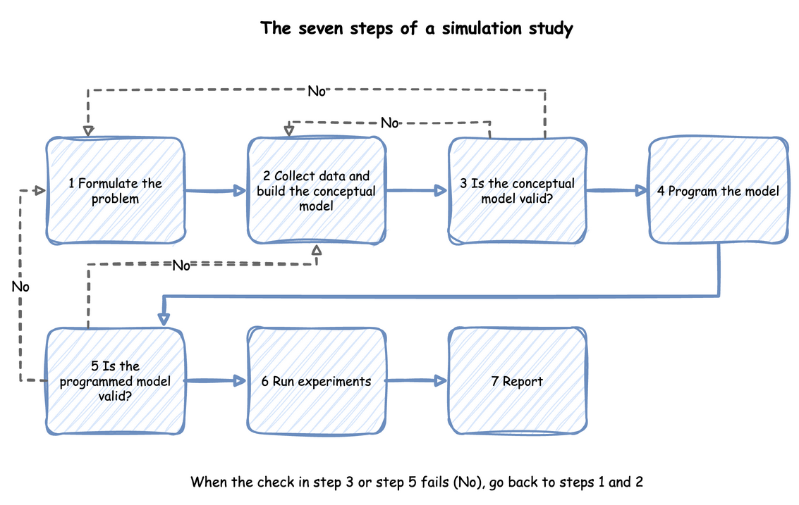

A Simulation Study
Building a model is one step of a simulation study, and often not the largest. This page walks through the whole study, from the question to the report, with the packing shop as the example. Each step says what to produce and names the page that explains it.
The steps follow Law, "How to Conduct a Successful Simulation Study" (Winter Simulation Conference, 2003), which gives a seven-step approach, and which we read in full. The wording and the shop example are our own. Law notes that programming the model is only 25 to 50 percent of the work of a sound study, despite the common view of simulation as a programming exercise.
Steps in Order
Look at the diagram for the order of the steps. Steps 3 and 5 check the work of steps 2 and 4. When the check in step 3 or step 5 fails, Law's figure sends you back to steps 1 and 2, because the problem or the conceptual model may need to change.

Ask One Question
Start by writing down the question and the measures that will answer it. A study with no well-defined objective cannot say when it is finished, and Law lists this first among the pitfalls. Without specific questions the right level of model detail cannot be set either. For the shop the question is: how many packers keep the mean wait under 10 seconds in the busy hour? The measures are the mean wait of an order and how busy the packers are. The question also fixes the period (the busy hour), the system (the packing area, not the whole warehouse) and who decides (the shop manager).
Queues and Capacity answers this question: with 3 packers the mean wait is 1.27 seconds.
Conceptual Model and Data
Before writing code, collect what is known about the system and write the conceptual model: what the model includes, the assumptions it makes and the data it needs. Law calls this the assumptions document. For the shop it holds the following:
- Orders arrive one at a time, at a rate that does not change during the hour.
- A packer takes the next order from one queue, in order, and packs it.
- Packing takes a constant 1.5 seconds. Pickers, stock and delivery are outside the model.
Each input is an estimate until it is measured. For the shop these are the arrival rate and the packing time. Take the data from the real system where it exists, choose a distribution for each input, and test how much the choice matters. Choosing Inputs compares the candidate distributions, and Fit the Inputs fits them to measured times. A model with an input nobody has measured is still usable, as long as the study tests how far the answer depends on it, as Parameter Sweeps does.
The question decides how much detail goes in. Law warns against building one model element for each element of the real system: more detail costs run time, can miss the deadline and can hide the factors that matter. Add detail only when it can change the decision. Building Blocks lists the parts a model can have.
Check the Assumptions
Walk the people who know the system through the assumptions document. Law calls this a structured walk-through, and it matters twice: it finds wrong assumptions before code depends on them, and it makes the results more credible to the people who will act on them. Ask the shop manager whether arrivals really are steady in the busy hour, and whether a packer ever does anything else.
Build and Check the Model
Write the model, then check it in the two ways Checking and Validating describes. Verify that the program does what the conceptual model says: read the trace, work a case by hand, and compare the statistics with each other. Validate that the model is a good enough picture of the shop: compare its results with the real shop's where there is data, and test its sensitivity to the inputs.
The shop's model is built in First Simulation and extended in the tutorials that follow it. Queueing Basics gives the formulas that check the queue.
Run the Experiments
An experiment is a set of runs designed to answer the question. Decide the run length, the warm-up and the number of replications, then run each design and compute an interval for each measure. Output Analysis explains these choices, Trusting Results makes them for the shop, and Comparing Designs compares three packers with four: the fourth cuts the busy hour's mean wait by 2.21 ± 0.31 seconds.
Report the Result
State the answer to the question first, then the evidence for it. Say what the model includes and leaves out, what the inputs were and where they came from, how the model was checked, and how precise each result is. A reader who was not part of the study should be able to repeat it. Readiness and Reporting lists what to include, and Common Mistakes lists the errors that make a study wrong.
A study often repeats. A result that surprises is a reason to check the model again, and a changed question is a reason to change it. The steps are an order of work, not a one-way path.